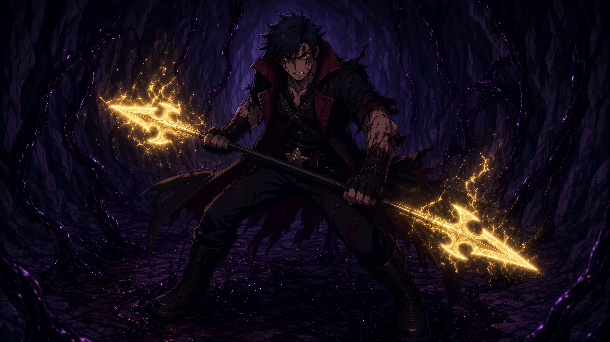

Recusant
Crown
Home
Fiction
Tales
Card Game
Art
Fiction
Serial chapters from the Recusant Crown
Jump to chapter…
Prologue — The Death of Leon Garo
Chapter One — Berthing
The Death of Leon Garo

Prologue
The last Vampire holds a tunnel against the dark so a king can finish his evacuation. Tenmei's light is waning. Leon Garo has ten minutes left.
Berthing
Chapter One
Nikko wakes on a Shin-Seibu beach with sand in his ear and a memory that won't hold still. A crab, a cat, and two strangers who decide to keep him.